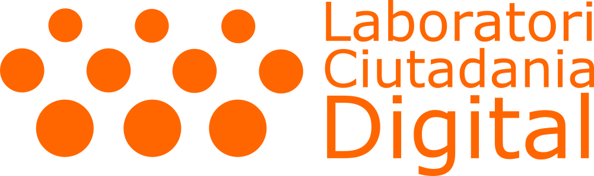

404 Page not found - anar a l'inici
Canviar Navigació
Inici
Blog
Qui som
Contacte
We are sorry - this page is not here anymore
Error 404 - Page not found
Go to Homepage
Plantilla creada per
Bootstrapious
. Adaptada a Hugo per
DevCows